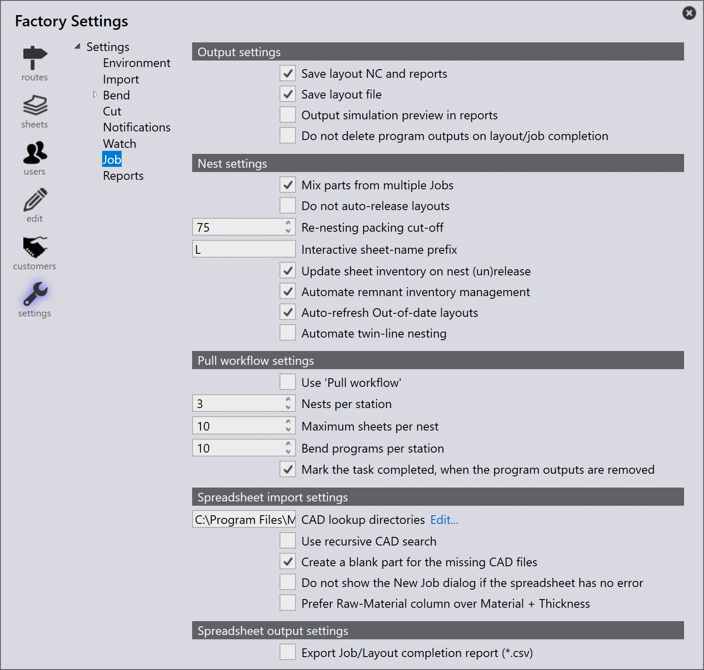

Job

Ausgabeeinstellungen
Layout-NC und Berichte speichern - Aktivieren Sie diese Option, damit Layout- NC und Reports gespeichert werden.
Layout-Datei speichern - Aktivieren Sie diese Option, damit die Layout- Datei gespeichert wird.
Simulationsvorschau in Berichten ausgeben - Aktivieren Sie diese Option, um die Werkzeugzuordnungs-Simulationsvorschau zusammen mit den anderen Ausgaben zu generieren. Dies ist eine kurze GIF-Animation für die Laser-/Stanzwerkzeugzuordnung.
Programmausgaben bei Fertigstellung des Layouts/Jobs nicht löschen - Das Aktivieren dieser Option überspringt den Löschvorgang für die Programmausgaben, wenn ein Auftrag/Layout als abgeschlossen markiert wurde.
Schachteleinstellungen
Teile aus mehreren Jobs mischen - Unterstützt das gemischte Nesting. Teile aus mehreren Aufträgen sollten zusammen genested werden, um eine bessere Packeffizienz zu erzielen.
Layouts nicht autom. freigeben - Dies verhindert, dass Layouts für die Produktion verfügbar sind, bis alle Layouts in einem freigegebenen Zustand sind.
Packstopp automatisch freigeben - Dieser Wert wird verwendet, um zu entscheiden, ob ein genestetes Layout in der Genehmigungswarteschlange gehalten wird und erneut genested wird, wenn neue Teile geplant werden, oder ob sie für die Produktion freigegeben werden und zugehörige Ausgaben in den Ausgabeordner exportiert werden.
Präfix für interaktive Tafelnamen - Dieser Abschnitt wird verwendet, um interaktives Nesting zu unterstützen, bei dem der Benutzer mehr Kontrolle über die zu nestenden Teile und das Nest-Ergebnis hat. Verwenden Sie ein Benennungsschema, das sich vom Auto-Nesting unterscheidet, für die interaktiv genesteten Layouts.
Tafelbestand bei Schachtelungsfreigabe (Nicht-Freigabe) aktualisieren - Wenn diese Option aktiviert ist, wird das Blechinventar aktualisiert, wenn ein Nest an eine Maschine gesendet wird. Auch das Zurückrufen des Nests von der Maschine gibt das Blech an das Inventar zurück.
Verwaltung des verbleibenden Bestands automatisieren - Wenn dieser Schalter ausgewählt ist, automatisiert die Software die Reststück-Bestandsverwaltung. Wenn nicht ausgewählt, wird die Reststückverwaltung interaktiv.
Nicht aktuelle Layouts automatisch aktualisieren - Wenn aktiviert, aktualisiert die Software alle ui:EGTag.SelectOutOfDate[Out-of-date Layouts], die mit einem Teil verknüpft sind, nachdem dessen Schneidlösungen berechnet wurden.
Twin-Line-Schachteln automatisieren - Aktivieren Sie diese Option, um die Twin-Line-Automatisierung zu aktivieren.
Einstellungen für Pull-Workflow
„Pull-Workflow“ verwenden - Diese Option ist nützlich für Benutzer, die ein hochautonomes Planungs- und Nesting-System benötigen. Wenn aktiviert, plant TruSmartCAM das Nesting bei Bedarf.
Nests pro Station - Dieser Wert legt fest, wie viele Layouts pro Station erstellt werden sollen.
Maximale Anzahl Tafeln pro Nest - Dieser Wert wird verwendet, um die maximale Blechanzahl gegen das eindeutige Nest zu steuern. Wenn es also zum Beispiel einen Auftrag mit einem großen Teil (das das gesamte Blech füllt) gibt, das in großen Mengen (z.B. 500) benötigt wird - erstellt TruSmartCAM im Pull-Modus nicht mehr ein einzelnes Nest mit 500 Kopien. Stattdessen werden 10 Kopien pro Nest erstellt, wobei 10 das Maximum ist.
Biegeprogramme pro Station - Dieser Wert legt fest, wie viele Biegeprogramme pro Station erstellt werden sollen.
Aufgabe als abgeschlossen markieren, wenn die Programmausgaben entfernt werden - Aktivieren Sie diese Option, damit ein Layout als Erledigt markiert wird, wenn die Ausgaben aus dem Zielausgabeverzeichnis entfernt werden.
Einstellungen für Tabellenblattimport
CAD-Suchverzeichnisse - TruSmartCAM versucht, den in der importierten CSV erwähnten Teileintrag aus der Teilbibliothek zu laden. Wenn das Teil jedoch nicht in der Teilbibliothek verfügbar ist, versucht es, die Teile aus Lookup-Verzeichnissen basierend auf der Reihenfolge der in diesem Dialog festgelegten Verzeichnisse abzurufen.
Rekursive CAD-Suche verwenden - Aktivieren Sie diese Option, damit die Suche für aufeinanderfolgende Ergebnisse wiederholt wird.
Leeres Teil für die fehlenden CAD-Dateien erstellen - Wenn Teile nicht in der TruSmartCAM-Bibliothek oder in Lookup-Verzeichnissen vorhanden sind, erstellt TruSmartCAM ein leeres Teil für diese nicht verfügbaren Teile.
Dialog „Neuer Job“ nicht anzeigen, wenn das Tabellenblatt fehlerfrei ist - Wenn CSV-Einträge sauber sind, d.h. keine Datendiskrepanz aus der DB vorliegt oder alle Felder ordnungsgemäß aufgelistet sind, zeigt TruSmartCAM das Job- Übersichtsfenster nicht an und verarbeitet den Auftrag, sobald die CSV importiert oder abgelegt wird.
Spalte Rohmaterial gegenüber Spalte Material + Dicke vorziehen - Unterstützte Spreadsheet-Typen:
-
Muster 1: PartName, Quantity, DueDate, Priority, RawMaterial
-
Muster 2: PartName, Quantity, DueDate, Priority, Material, Thickness
-
Muster 3: PartName, Quantity, DueDate, Priority, Material, Thickness, RawMaterial
Wenn diese Option nicht aktiviert ist, wird Muster 1 als Standard- Spreadsheet-Typ betrachtet. Wir unterstützen auch Muster 3, falls das CSV-Format vom Typ Muster 3 ist.
Wenn diese Option aktiviert ist und CSV vom Typ Muster 2 ist, löst TruSmartCAM das Rohmaterial aus den Material- und Dickenfeldern aus der CSV auf.
Einstellungen für Tabellenblattausgabe
Abschlussbericht für Job/Layout exportieren (.csv)* - Aktivieren Sie diese Option, um den CSV-Export zu aktivieren, wenn ein Layout oder Auftrag abgeschlossen ist. Die abgeschlossenen Berichte werden am Reports-Zielort gespeichert, der unter Factory → Settings → Reports-Einstellungen angegeben ist.